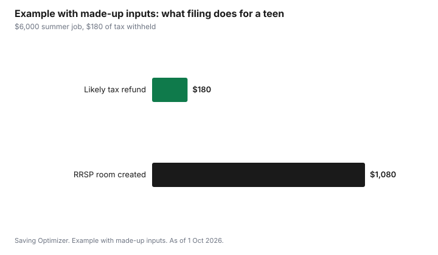

Kids · Canada
Your Teen's First Job: Taxes, Filing a Return and Starting a TFSA at 18
When a teen in Canada gets a first job, the employer deducts income tax and EI premiums from each pay, and CPP contributions once they turn 18. Most teens earn less than the basic personal amount, $16,452 federally for 2026, so filing a tax return usually brings back the income tax that was withheld. Filing also builds RRSP contribution room for later. TFSA room starts in the year a teen turns 18, and the 2026 annual limit is $7,000, so an 18-year-old with savings from a summer job can start a tax-free account right away.
Key takeaways
- Pay stub deductions: income tax and EI at any age; CPP from the month after the teen turns 18.
- File a return even with low income. Withheld income tax often comes back, and earned income builds RRSP room at 18 percent.
- The employer issues a T4 by the end of February. Keep it for the return.
- TFSA room starts in the year the teen turns 18. The 2026 limit is $7,000. In provinces where the age of majority is 19, room still builds from 18.
- Example with made-up inputs: a teen earning $6,000 with $180 of tax withheld would likely get the $180 back.
Reading the first pay stub
The first pay stub shows gross pay and the deductions. Income tax is withheld based on the TD1 form the teen fills in; a teen who expects to earn less than the basic personal amount for the year can say so on the TD1, which reduces withholding. EI premiums are deducted at any age. CPP contributions start the month after the teen turns 18. Vacation pay may be added to each cheque or paid later, depending on the province and employer.
| Deduction | When it applies | Comes back at tax time? |
|---|---|---|
| Income tax | Based on the TD1 and pay | Often, if annual income is low |
| EI premiums | Any age, on insurable earnings | Rarely; a small amount if earnings are very low |
| CPP contributions | From the month after age 18 | Over-contributions only |
Why a teen should file a tax return
There is no requirement to file if no tax is owed, but filing usually pays. If income tax was withheld and the teen's income is below the basic personal amount, filing gets it back. Earned income creates RRSP contribution room equal to 18 percent of the year's earned income, up to the annual maximum, and that room carries forward for years when an RRSP deduction is worth more. From age 19, a filed return also lets CRA assess the GST/HST credit.
Filing is often free with certified tax software or a free tax clinic. The teen needs their SIN and the T4 from each employer.
The TFSA at 18
A Tax-Free Savings Account lets investment growth and withdrawals be tax-free. Contribution room starts accumulating in the year a person turns 18, and the 2026 annual limit is $7,000. In provinces and territories where the age of majority is 19, a financial institution may not open the account until 19, but the room from 18 still accumulates. Contributions above available room are taxed at 1 percent a month, so check room in CRA My Account. The TFSA room guide explains how to read it.
For a teen with a few thousand dollars from summer jobs, a TFSA in a high-interest savings or simple investment option keeps the money growing tax-free. The RRSP versus TFSA guide covers why most young, low-income savers start with the TFSA.
Parents' side: credits and benefits
A teen's income does not count in the Canada Child Benefit's adjusted family net income. It does reduce a single parent's eligible dependant claim dollar for dollar; the eligible dependant guide shows how.
Example with made-up inputs: a summer job
These numbers are an example with made-up inputs, not a tax calculation. A 17-year-old earns $6,000 over a summer. The employer withheld $180 of income tax and some EI. With income well below the $16,452 basic personal amount, filing a return would likely return the $180. The return also creates $1,080 of RRSP room, 18 percent of $6,000, for later years.
| Line | Amount |
|---|---|
| Earned income | $6,000 |
| Income tax withheld | $180 |
| Likely refund of income tax | $180 |
| RRSP room created (18%) | $1,080 |

Sources
- CRA, 2026 TD1 Personal Tax Credits Return, as of 1 Oct 2026. Basic personal amount up to $16,452.
- CRA, Before you contribute to a TFSA, as of 1 Oct 2026. Room from the year you turn 18; 2026 limit $7,000; age of majority note; 1 percent per month on excess.
- CRA, RRSP deduction limit, as of 1 Oct 2026. 18 percent of previous-year earned income up to the annual maximum.
- CRA, payroll pages, as of 1 Oct 2026. CPP from age 18; EI at any age.
- CRA, T4114 Canada child benefit. Family net income excludes the child's income.
- The $6,000 income and $180 withheld in the example are made-up inputs.
Frequently asked questions
Does my teenager need to file a tax return in Canada?
Not if no tax is owed, but filing usually helps. It can return income tax withheld from pay, it creates RRSP room equal to 18 percent of earned income, and from 19 it lets CRA assess the GST/HST credit.
Do teens pay CPP and EI?
EI premiums are deducted at any age on insurable earnings. CPP contributions start the month after a person turns 18.
When can my teen open a TFSA?
TFSA room starts in the year a person turns 18, and the 2026 annual limit is $7,000. Where the age of majority is 19, an institution may wait until 19 to open the account, but the room from 18 still builds.
How much can a teen earn without paying tax in Canada?
For 2026, the federal basic personal amount is $16,452, and provinces have their own amounts. A teen earning less than that generally owes little or no income tax, though tax may still be withheld from pay.
Does my teen's income affect the Canada Child Benefit?
No. The CCB uses the parents' adjusted family net income, which excludes the child's income. A teen's income does reduce a single parent's eligible dependant claim.
Researched and drafted with AI assistance and fact-checked against official Canadian sources. How we create content.
Disclosure: Banks, tax software and investment accounts are described as offer types; none is named or ranked. Saving Optimizer may earn a commission if a partner link is added later; no partnership is claimed. Education only. This is not tax advice.